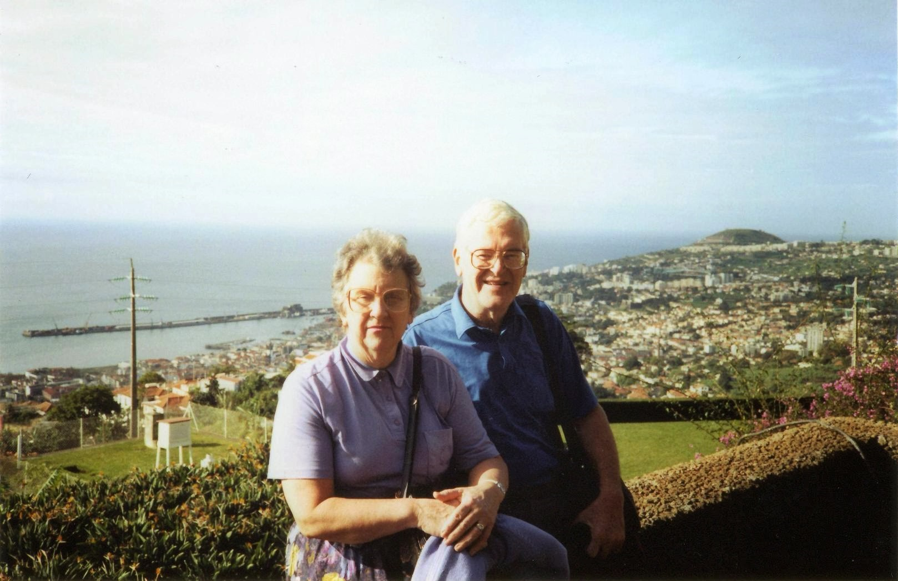
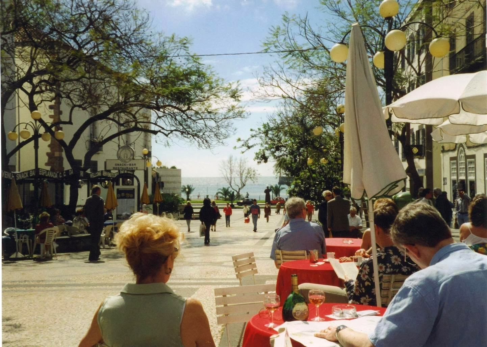
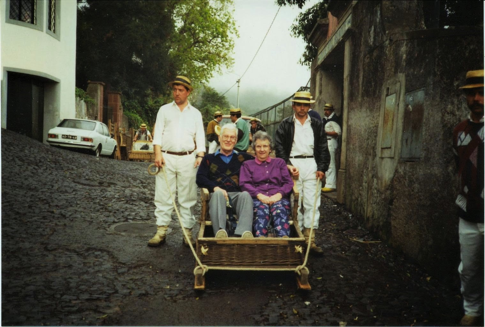

Madeira 1992-1994
1992
 Our first holiday to the island of Madeira. We were staying at the Hotel Santa Isabel in Funchal. This 3 star hotel sits in the grounds of the 5 star Hotel Savoy. You get to us all the facilities of the Savoy with out paying Savoy prices. The Savoy is a bit old fashioned and much more formal, so we were happier in the Isabel. We had a corner room which I think you could call a suite. There were two bedrooms, one of which had the sofas and TV, which shared a balcony. From the balcony we had lovely sea views, but could also people watch as we had a good view of the entrance and outside restaurant terrace of Hotel Carlton. The balcony was a lovely suntrap.{kind=link}
The hotel was at the top of the hill leading down to the town. The walk down into town took you past the Hotel Casino Park and the Casino da Madeira, and the Santa Catarina Gardens or Parque de Santa Catarina. The gardens have great views over Funchal Bay and the docks where the cruise ships tie up, and up into the hills above the town, a huge lawn surrounded by flowerbeds full of trees, shrubs and plant species from all over the world, and a lake with ornamental fountains. There are a number of statues, including one of a local farmer. The Santa Catarina Chapel was ordered to be built by the wife of João Gonçalves Zarco, the first captain of the island in honor of Saint Catherine of Alexandria in 1425.
The local market, which is on two levels, with a central open square is fabulous, selling all sorts of fruit and veg, both familiar and not. They have a local fruit called the custard apple, which looks like a large scaly green apple, which I didn't much like the taste of. There are also the Maderian bananas, which are much smaller and sweeter than the ones we get at home. They can't be sold as bananas in the EU because they don't have a big enough curve! There are also stalls selling another local speciality, wicker items and lots of leather bags. The ladies selling flowers have to wear traditional Maderian costume. The most popular seller is the Bird of Paradise or Estrelícia. There is a separate fish market. The local fish speciality is a fish called espada, the black scabbardfish. It is only found in very deep water in the Atlantic. It has very soft white flesh and lends itself to all sorts of lovely sauces.
 There are lots of places to have a bite to eat for lunch after having a walk along the prom, where you can sit next to the beach. Our favourite was next to the boat that had been owned by the Beatles, which had been turned into a permanently docked restaurant. We did find the Holy Trinity Church, know as the English Church. We took to having our morning elevenses and postcard writing at the Apolo Bar, which was opposite Funchal Cathedral, not far from the prom.
{kind=link}
We took a taxi trip up to the Botanical Gardens. The views from up there were gorgeous, looking down over Funchal Town. We also booked one of the day long island tours, which took us around the western side of the island. We drove west along the coast, past Camara De Lobos, where Winston Churchill used to visit to paint, to Ribeira Brava, where we turned north and climbed up to the Pousada Vinhaticos where we were up in the low cloud. A comfort break there, and then onwards, to Encumeada, where we turned west, and travelled along what seemed to be a flat section of the island called Serra d'Agua, which we couldn't see because of the low cloud. Just before we arrived in Porto Moniz, we stopped at a viewpoint, which had great views down to where we were going to have lunch. This was at a restaurant at the Piscinas Naturais Velhas, a number of lava formed rock pools. You could walk around the pools, but with the waves breaking over the outer walls, it got a little dicey. After lunch, where Dad and I made sure none of the wine left on the other tables went to waste, we drove along the North Coast Road to Sao Vincente. This was a spectacular drive with lots of waterfalls and tunnels along the way. From Sao Vincente, we turned south and returned to Funchal.
The one part of the Savoy we did use was the Lido which was down at sea leveland reached by a lift after a walk through the Savoy Gardens. There were plenty of Sun loungers and two pools
1993
 A return trip to Madeira and to exactly the same room in the Hotel Santa Isabel. A wander down to the Lido area saw it was being built up at a rate of knots. We went on a couple of the organised trips. The first one took us up to Monte by bus. There is a small botanical garden up in Monte, and also Monte Cathedral. We came back down on the famous Monte toboggan run. Mum and Dad went in one of the toboggans, I went down with one of the other tour participants.{kind=link}
The second trip was to the eastern side of the island. We started off with a levada walk which took us to the Balcoes viewpoint near Ribeira Frio. From there you could see some great views of the East Coast by Faial. Next stop was Pico do Arieiro at 1,818 m high, which is Madeira Island's third highest peak, and has views of the island's rugged interior. It was noticeable cooler up there than on the coast. We then went north to Santana. It is well known for its small thatched triangular houses, built of natural stone and thatched with straw, known as Casas Típicas de Santana. Next stop was a viewpoint looking down on the town of Machico, and to the east, Sao Lourenço Point, the most eastern point on the Island. Machico was the landing point of the discoverers of Madeira.
1994
Once more a trip to the Hotel Santa Isabel, and our trusty corner suite. We had one more of the organised trips to go on, the one that goes up to the Valley of the Nuns or Curral das Freiras. En route, we stopped at a viewpoint looking down over Funchal. We got to sample two of Madeira's traditional alcoholic beverages. Poncha is made with sugar cane rum, bee honey and lemon juice, and is found all over the island. The “Ginja” is a traditional liqueur from Curral das Freiras (Nun’s valley) made through the infusion of Ginjas or cherries, in alcohol and adding caramel along with other ingredients. Both are incredibly high in alcohol, but being so sweet don't taste strong, a very dangerous combination but delicious.We decided to hire a car for the day this year. We drove to the north of the island and after lunch in Sao Vincente, drove along the coast road to Porto Moniz. We also made more use of the Savoy Lido whilst the weather was good. During the week, a band of weather arrived which saw waves crash over the small jetty down at the Lido. It had to be roped off to prevent access for safety reasons.